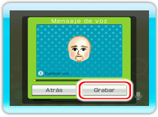

Puedes crear mensajes de voz y enviarlos a tus amigos Wii.
・Además, puedes agregar una foto a tu mensaje de voz.
・Sin embargo, no podrás crear mensajes mientras estés en una conversación.
・Los amigos Wii que no tengan el accesorio Wii Speak también pueden recibir mensajes de voz a través del tablón de Wii.
-
En la sala o en la antesala, selecciona
para pasar a la pantalla de creación de mensajes.
-
Selecciona
 .
Aparecerá una lista con tus amigos Wii.
.
Aparecerá una lista con tus amigos Wii.
-
Para elegir a qué amigos Wii vas a enviar el mensaje, apunta a las casillas que hay a la izquierda de sus nombres y oprime
 .
En la casilla aparecerá el icono de un sobre.
Puedes enviar un mensaje a un máximo de 8 amigos Wii a la vez.
Para quitar a un amigo Wii de la selección, apunta al icono del sobre que hay junto a su nombre y oprime
.
Selecciona Confirmar para volver a la pantalla de creación de mensajes.
.
En la casilla aparecerá el icono de un sobre.
Puedes enviar un mensaje a un máximo de 8 amigos Wii a la vez.
Para quitar a un amigo Wii de la selección, apunta al icono del sobre que hay junto a su nombre y oprime
.
Selecciona Confirmar para volver a la pantalla de creación de mensajes.
-
Si quieres agregar un Mii al mensaje, selecciona
 y elige el Mii que quieras usar.
y elige el Mii que quieras usar.
-
Para grabar tu voz, en la pantalla de creación de mensajes selecciona el recuadro gris debajo de Mensaje de voz.
-

Selecciona Grabar y habla claramente en dirección al micrófono. Los mensajes pueden tener una duración de hasta 10 segundos.
Para cambiar tu voz, oprime
antes de grabar el mensaje. Cuando hayas terminado, podrás escuchar lo que has grabado.
-
Selecciona Confirmar para volver a la pantalla de creación de mensajes. El recuadro Mensaje de voz cambiará de color, indicando que hay una grabación lista para enviar.
-
Para agregar una foto, selecciona el recuadro gris debajo de Foto. Sigue los pasos 2 y 3 descritos en la página 14. Mostrar una foto y selecciona Confirmar.
-
En la siguiente pantalla, vuelve a seleccionar Confirmar para volver a la pantalla de creación de mensajes. La foto quedará agregada a tu mensaje.
-
Cuando tu mensaje esté terminado, selecciona Enviar.
Nota: Antes de enviar el mensaje, siempre puedes seleccionar otra foto u otro Mii, así como volver a grabar tu voz.
Cuando recibas un mensaje, en el Menú de Wii parpadeará el botón del tablón de Wii.
También puedes configurar tu consola Wii de modo que la ranura para discos parpadee cuando recibas un nuevo mensaje.
Consulta para ello el manual de canales y configuración de la consola.
Si no queda memoria libre en tu tablón de Wii, puedes grabar los mensajes en una tarjeta SD.
Consulta el manual de canales y configuración de la consola para obtener más información.